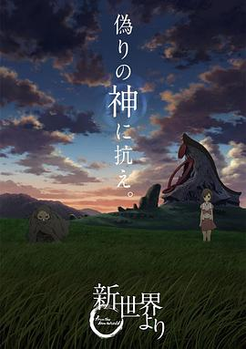

来自新世界 / 新世界より
又名：自新世界 / From the New World
作品信息
| 导演 | 石滨真史 / 山内重保 / 大和直道 / 柳沼和良 / 中山敦史 / 高桥知也 / 藤濑顺一 / 工藤宽显 / 高村雄太 / 广岛秀树 / 黑泽守 / 渊上真 / 森义博 / 冈田坚二朗 |
| 编剧 | 贵志祐介 / 十川诚志 / 中濑理香 / 中村能子 |
| 主演 | 种田梨沙 / 东条加那子 / 梶裕贵 / 花泽香菜 / 工藤晴香 / 高城元气 / 藤堂真衣 / 村濑步 / 东地宏树 / 伊藤美纪 / 榊原良子 / 星野贵纪 / 浪川大辅 / 平田广明 / 堀江由衣 / 杉田智和 / 远藤绫 |
| 类型 | 剧情 / 动画 |
| 制片国家/地区 | 日本 |
| 语言 | 日语 |
| 首播 | 2012-09-28(日本) |
| 集数 | 25 |
| 单集片长 | 24分钟 |
| IMDb | tt2309320 |
最后一次看到是 2026-08-01T11:09:48+10:00 · 豆瓣原页